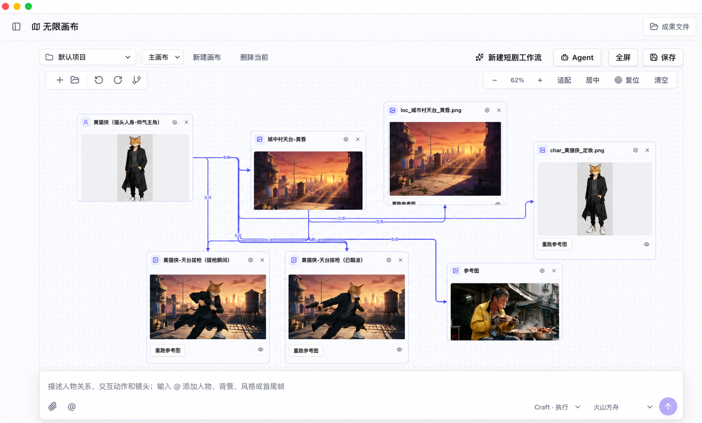
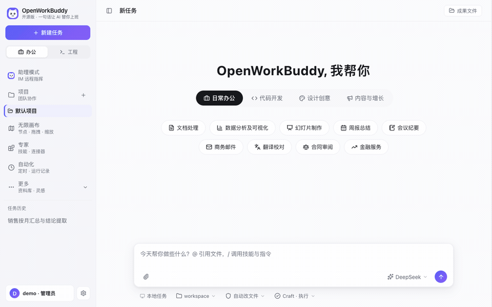
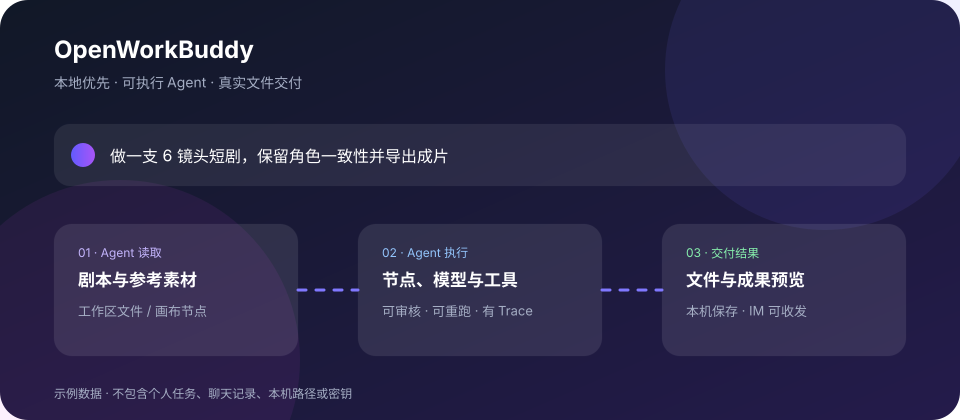

Verify the file, not the claim.
Slides, documents, spreadsheets and web pages land in your workspace so you can open, inspect and revise them.
OpenWorkBuddy is a local-first AI office agent. Give it a request and your material; it plans, works and checks the result, then hands you a real file on your machine — not another chat log.
Slides, documents, spreadsheets and web pages land in your workspace so you can open, inspect and revise them.
Bring cloud models, Ollama, Claude Code or Codex. Sessions, files and API keys stay under your control.
Drop in a Skill, connect MCP tools or read and change the JavaScript Agent loop. No framework maze required.
The executable infinite canvas keeps scripts, characters, locations, references, shots and generated results in one place. Connect inputs, ask the canvas Agent, preview media and rerun one node without losing the creative thread.

PPT, Word, Excel, HTML, Markdown and media outputs with a results panel for inspection.
Reusable Markdown Skills, experts, expert teams, connectors and Agent Plugins.
DeepSeek, Qwen, GLM, Kimi, OpenRouter, Ollama, Claude Code and Codex.
See model, tool, duration, tokens, inputs, outputs and execution results; optionally connect Langfuse.
Use Feishu, WeChat and other IM entry points to send requests and receive files, images and audio.
Follow a real task from server.js to agent.js, routing, tools, verification, memory and permissions.


Run a local AI office assistant that gives you files you can actually ship.
Run in three minutes ↗Study a readable Agent loop with models, tools, memory, permissions and evaluation in one repo.
Read the architecture ↗Contribute a Skill, expert workflow, MCP preset, UI improvement or reproducible issue.
Join the build ↗Keep the source and workspace on your machine.
Choose a model or use a local engine.
Give it a request and your material.
Open the delivered file and keep improving it.
Star the repo to follow releases. Open an issue with a reproducible problem. Send a small, complete contribution.